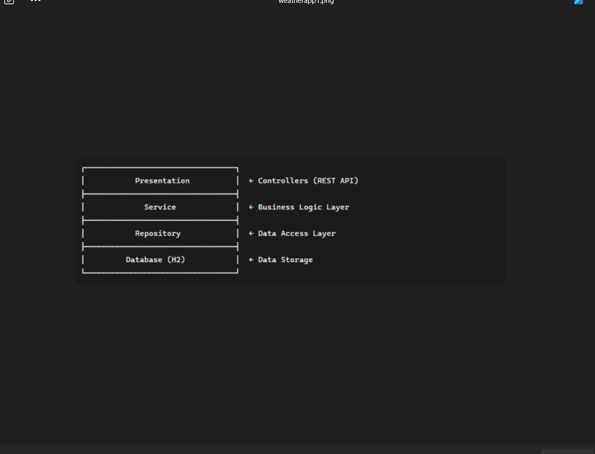
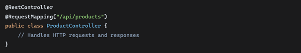
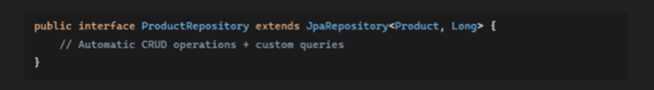
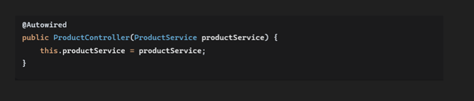
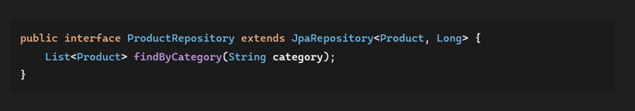
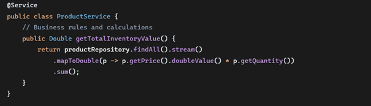

Project Overview
The Weather App is a comprehensive RESTful API service that provides accurate weather data and forecasts. This project was built to demonstrate backend development skills using Java and Spring Boot, with a focus on creating scalable, maintainable code following industry best practices.
Problem Statement
Many weather applications provide data but lack a clean, well-documented API for developers. I wanted to create a solution that would offer:
- Reliable weather data through a RESTful interface
- Proper error handling and validation
- Scalable architecture that could handle increased load
- Clear documentation for other developers
Architecture Pattern: Layered Architecture
The application follows a clean layered architecture with separation of concerns:

System Architecture Overview
Core Technologies Stack
1. Spring Boot (Main Framework)
- Purpose: Rapid application development
- Features: Auto-configuration, embedded server, production-ready
- Version: Spring Boot 3.x with Jakarta EE
2. Spring Web MVC (REST API Layer)

Spring Web MVC Implementation
- Pattern: Model-View-Controller for web requests
- HTTP Methods: Proper implementation of GET, POST, PUT, DELETE
- Data Format: JSON for request/response payloads
3. Spring Data JPA (Persistence Layer)

Spring Data JPA Implementation
- ORM: Object-Relational Mapping with Hibernate
- Pattern: Repository Pattern for data access
- Features: Automatic query generation from method names
4. H2 Database (Embedded Database)
- Type: In-memory database for development
- URL: JDBC:h2:mem:weatherdb
- Purpose: Development and testing environment
5. Maven (Build Tool)
- Dependency Management: Centralized dependency management
- Build Automation: Automated build process with lifecycle management
Design Patterns Applied
1. Dependency Injection

Dependency Injection Pattern
- Benefit: Loose coupling, easier testing, and maintainability
- Implementation: Spring's @Autowired annotation and constructor injection
2. Repository Pattern

Repository Pattern Implementation
- Benefit: Abstracts data access logic from business logic
- Implementation: Spring Data JPA repositories
3. MVC Pattern (Model-View-Controller)
- Model: WeatherData entity class with JPA annotations
- View: JSON responses (REST API)
- Controller: WeatherController class with request mappings
4. RESTful Design Pattern
- Resources: Weather data as REST resources
- HTTPS Verbs: Proper use of GET/POST/PUT/DELETE
- URL Design: /api/weather/{id}, /api/forecast/{location}
Key Features Implemented
1. CRUD Operations
- Create: POST /api/weather - Add new weather data
- Read: GET /api/weather and GET /api/weather/{id}
- Update: PUT /api/weather/{id} - Update existing weather data
- Delete: DELETE /api/weather/{id} - Remove weather data
2. Business Logic Layer

Business Logic Layer Implementation
The service layer contains all business logic, including:
- Data validation and transformation
- Integration with external weather APIs
- Forecast calculation algorithms
- Error handling and logging
3. Advanced Querying
- Dynamic finders: Custom query methods in repositories
- Search functionality: Find by location, date range, weather conditions
- Range queries: Date and temperature range queries
4. Data Validation
Comprehensive validation implemented at multiple levels:
- JPA entity constraints with Bean Validation
- Custom validation annotations for business rules
- Request parameter validation in controllers
Architecture Benefits
Scalability
- Easy to add new features and endpoints
- Separate layers allow independent scaling
- Stateless design supports horizontal scaling
Maintainability
- Clean separation of concerns
- Easy to test individual components
- Consistent coding patterns and standards
Flexibility
- Database can be swapped (H2 → MySQL/PostgreSQL)
- Frontend can be any technology (React, Angular, etc.)
- Easy to replace external API integrations
Production Readiness
- Spring Boot provides health checks, metrics
- Easy to containerize with Docker
- Comprehensive logging and monitoring
Data Flow
- Client → HTTP Request → Controller
- Controller → Business Logic → Service
- Service → Data Access → Repository
- Repository → Database Operations → H2 Database
- Response ← JSON ← Controller ← Service ← Repository
Professional Grade Features
Proper Error Handling
Global exception handling with consistent error responses
RESTful Best Practices
Resource naming, proper HTTP methods, status codes
Service Layer
Business logic separated from controllers and repositories
Repository Pattern
Abstracted data access for maintainability and testability
Constructor Injection
Dependencies injected through constructors for testability
Comprehensive API
Complete set of endpoints for all weather operations
Conclusion
The Weather App demonstrates modern backend development practices using Spring Boot and Java. The application showcases clean architecture, proper separation of concerns, and production-ready features. The project serves as a foundation that could be extended with additional features like user authentication, more advanced forecasting algorithms, or integration with additional weather data sources.